Gioco di viaggio in famiglia
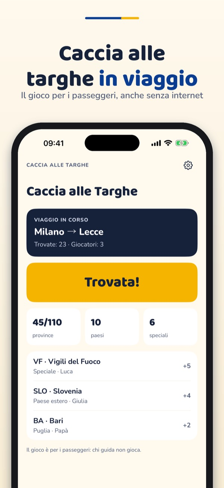
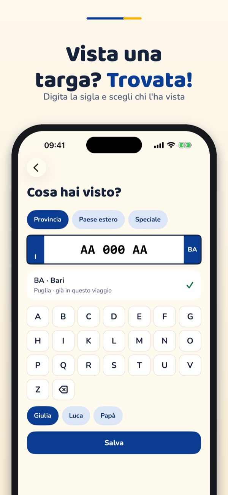
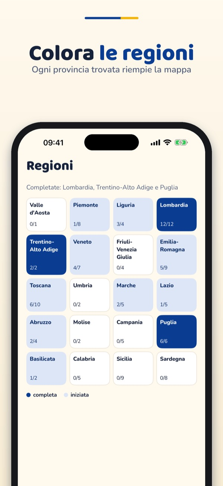
Caccia alle Targhe è il gioco per i passeggeri durante i viaggi in auto: raccogli le province italiane, le targhe speciali e i paesi stranieri.
Le province italiane, un viaggio e due giocatori si possono usare senza acquisto. Un acquisto unico sblocca targhe speciali, paesi esteri, viaggi illimitati, fino a sei giocatori, il quiz e i pacchetti con i cantoni svizzeri e i dipartimenti francesi. Nessun abbonamento.
Il gioco è per i passeggeri, non per chi guida. Si salvano solo sigle (provincia, paese, categoria), mai numeri di targa completi.
Terms of Use (EULA): https://www.apple.com/legal/internet-services/itunes/dev/stdeula/
Privacy: https://baytechbv.github.io/privacy/targhe-it/
Licence plate road trip game
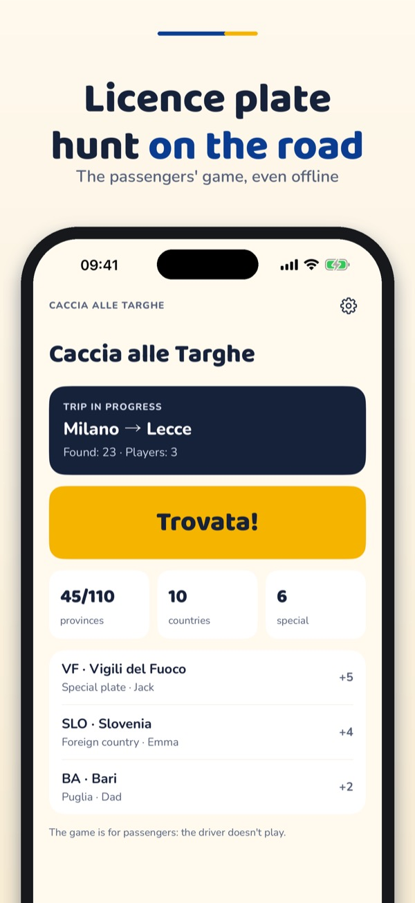
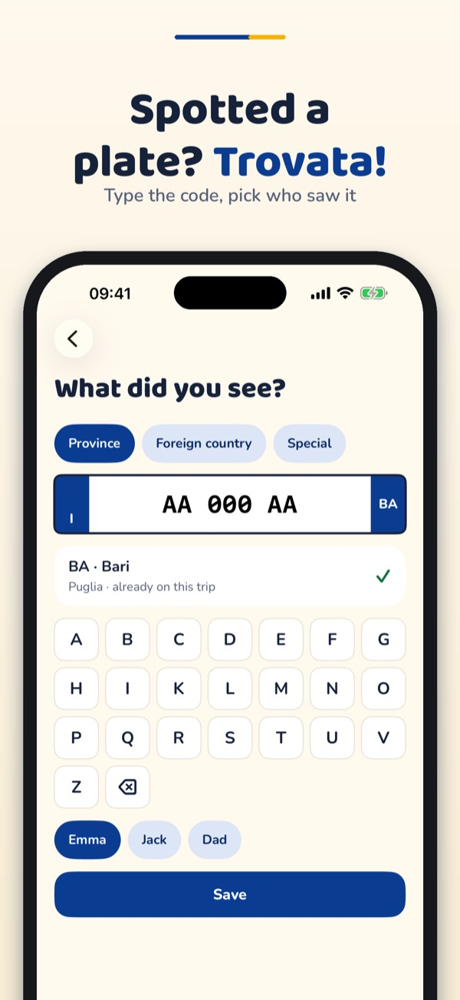
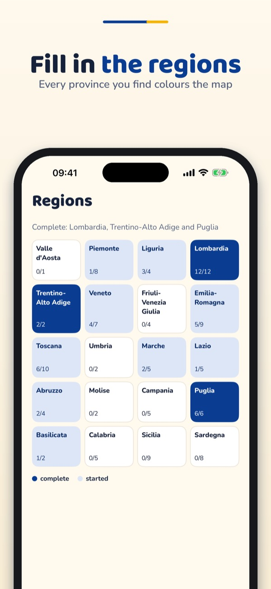
Caccia alle Targhe is a game for passengers on car trips: collect Italian provinces, special plates and foreign countries.
Italian provinces, one trip and two players can be used without a purchase. A one-time purchase unlocks special plates, foreign countries, unlimited trips, up to six players, the quiz and the packs with Swiss cantons and French départements. No subscription.
The game is for passengers, not for the driver. Only codes (province, country, category) are saved, never full plate numbers.
Terms of Use (EULA): https://www.apple.com/legal/internet-services/itunes/dev/stdeula/
Privacy: https://baytechbv.github.io/privacy/targhe-it/
Kennzeichen-Spiel für Reisen
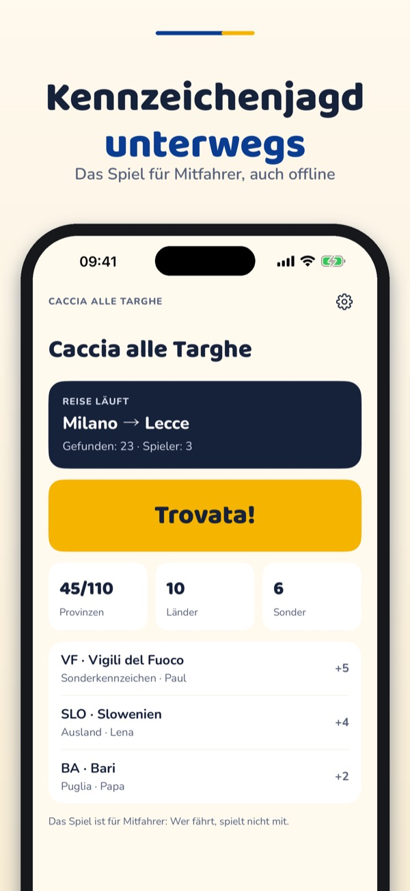
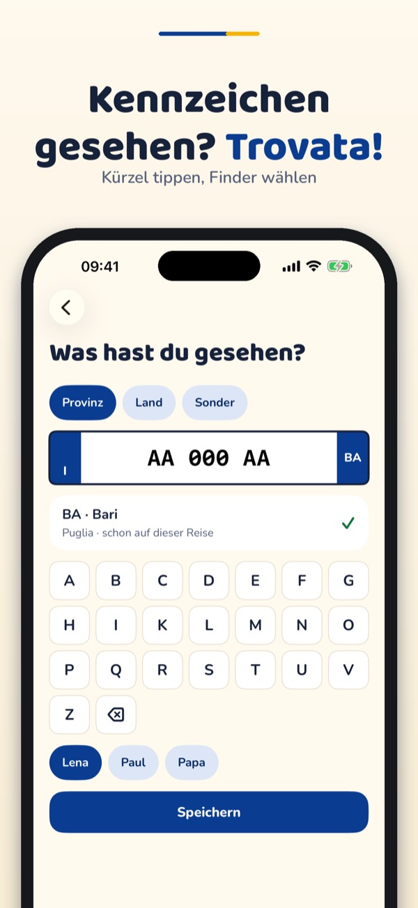
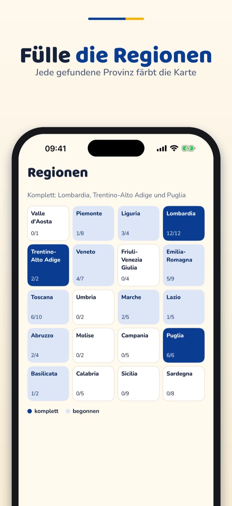
Caccia alle Targhe ist ein Spiel für Mitfahrer auf der Autofahrt: Kennzeichen-Kürzel sammeln, Regionen füllen, Familie herausfordern.
Die italienischen Provinzen, eine Reise und zwei Spieler sind ohne Kauf nutzbar. Ein einmaliger Kauf schaltet die Pakete Schweiz und Frankreich, Sonderkennzeichen, Länder, unbegrenzte Reisen, bis zu sechs Spieler und das Quiz frei. Kein Abo.
Das Spiel ist für Mitfahrer, nicht für den Fahrer. Gespeichert werden nur Kürzel (Provinz, Land, Kategorie), nie vollständige Kennzeichen.
Terms of Use (EULA): https://www.apple.com/legal/internet-services/itunes/dev/stdeula/
Privacy: https://baytechbv.github.io/privacy/targhe-it/
Jeu de plaques en voyage
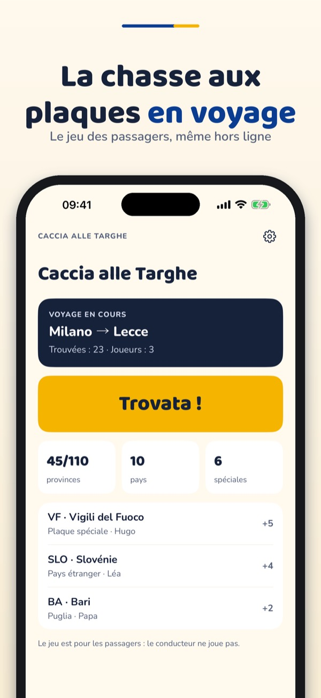
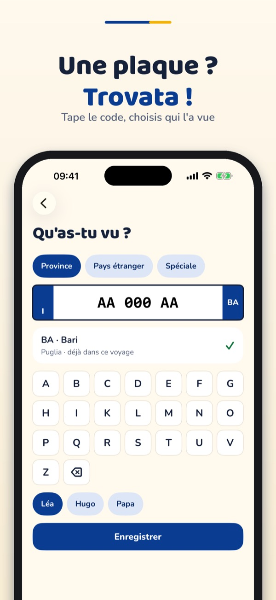
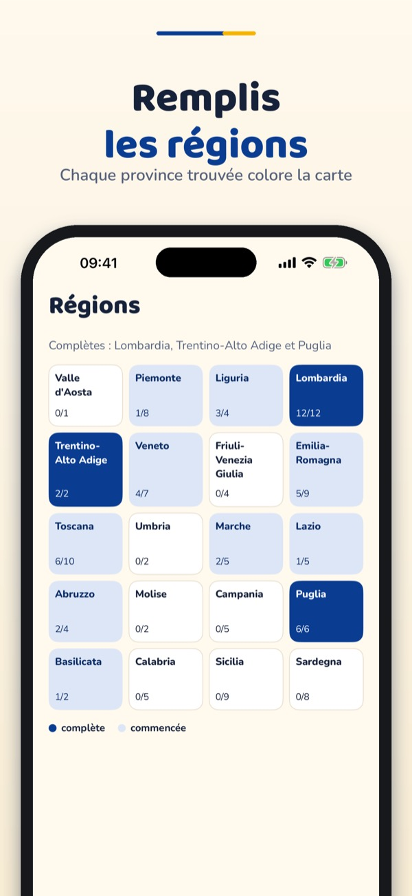
Caccia alle Targhe est un jeu pour les passagers pendant les trajets en voiture : collectionnez les codes des plaques, remplissez les régions et défiez la famille.
Les provinces italiennes, un voyage et deux joueurs sont utilisables sans achat. Un achat unique débloque les packs France et Suisse, les plaques spéciales, les pays, les voyages illimités, jusqu'à six joueurs et le quiz. Pas d'abonnement.
Le jeu est pour les passagers, pas pour le conducteur. Seuls les codes (département, pays, catégorie) sont enregistrés, jamais les numéros de plaque complets.
Terms of Use (EULA): https://www.apple.com/legal/internet-services/itunes/dev/stdeula/
Privacy: https://baytechbv.github.io/privacy/targhe-it/
Gra w tablice w podróży
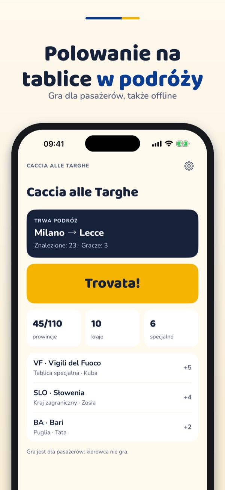
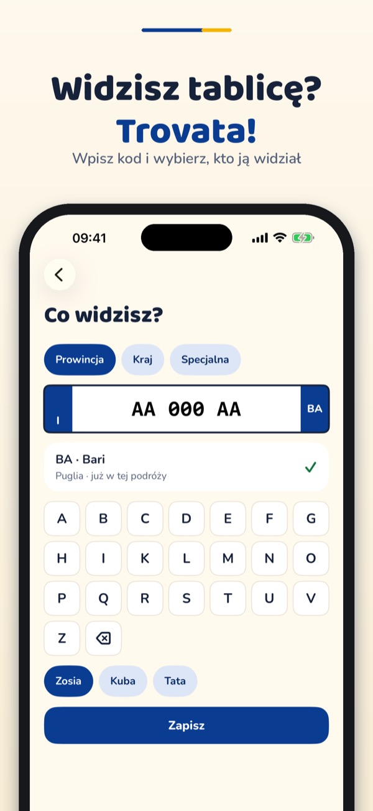
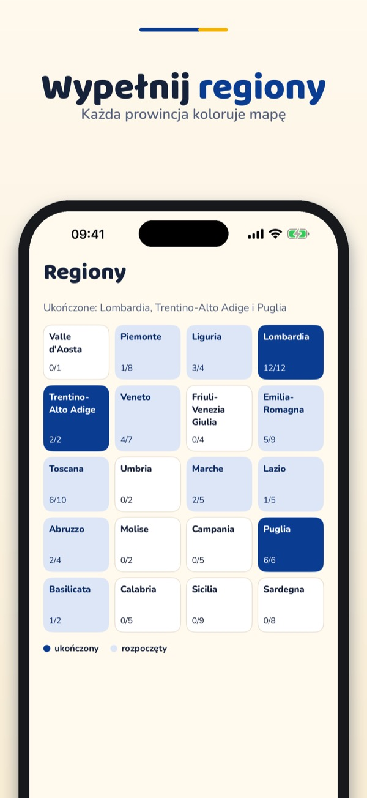
Caccia alle Targhe to gra dla pasażerów w czasie podróży samochodem: zbieraj kody z tablic, wypełniaj regiony i rywalizuj z rodziną.
Włoskie prowincje, jedna podróż i dwóch graczy są dostępne bez zakupu. Jednorazowy zakup odblokowuje pakiety Szwajcaria i Francja, tablice specjalne, kraje, nieograniczone podróże, do sześciu graczy i quiz. Bez subskrypcji.
Gra jest dla pasażerów, nie dla kierowcy. Zapisywane są tylko kody (prowincja, kraj, kategoria), nigdy pełne numery tablic.
Terms of Use (EULA): https://www.apple.com/legal/internet-services/itunes/dev/stdeula/
Privacy: https://baytechbv.github.io/privacy/targhe-it/